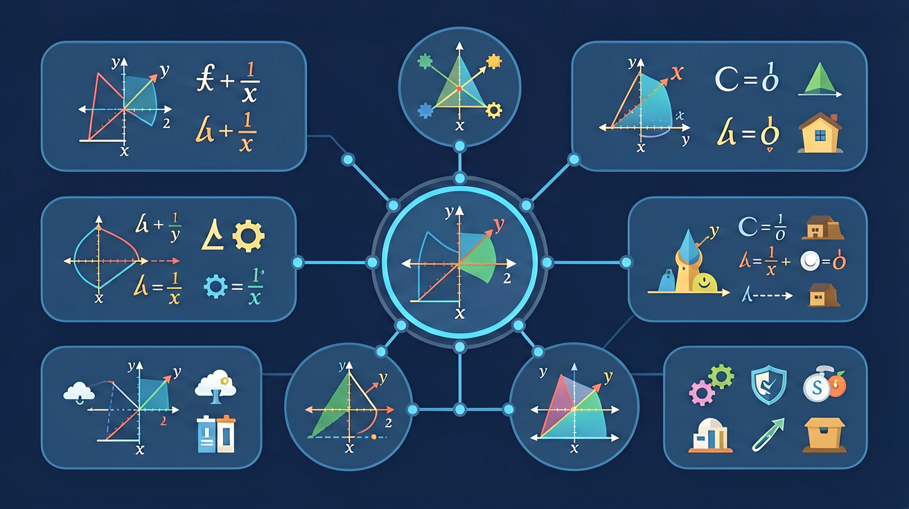

❓ 为什么负数乘负数会得正数？
❓ 计算时怎么确定先算加减还是乘除？
❓ 分数和小数混合运算怎么统一格式？
学完这一课，这些问题你都能自信地回答。
🎯 能说出有理数四则运算的优先级规则
🎯 能判断混合运算中符号变化的正确性
🎯 能计算含分数和小数的三步混合运算
加减乘除幂——掌握符号法则，让计算不再出错

在小学，我们学的加减法都是正数之间的运算。现在有了负数，情况复杂了——方向不同的两个数相加，结果应该是多少？
比如温度：早上-3°C，下午升高5°C，现在是几度？用加法：(-3) + 5 = ? 答案不是 -3+5=2（正确），也不是8（错误）。符号让计算变复杂了。
用"同号相加取同号、异号相加取大号符号、与零相加不变"三条规则，统一处理所有加法。
错误：3 − (−5) = 3 − 5 = −2（忘记减负变加正）
乘除法的核心是符号法则：同号得正，异号得负。绝对值按普通乘除法计算。
| 运算 | 符号规律 | 举例 |
|---|---|---|
| (+)×(+) | 正×正=正 | 3×4=12 |
| (+)×(−) | 正×负=负 | 3×(−4)=−12 |
| (−)×(+) | 负×正=负 | (−3)×4=−12 |
| (−)×(−) | 负×负=正 | (−3)×(−4)=12 |
数一数负数的个数：
用规律推导：(−1)×3 = −3，(−1)×2 = −2，(−1)×1 = −1，(−1)×0 = 0，依照规律向下：(−1)×(−1) = +1！数学要保持一致性，所以负负必须得正。
除法：同号得正，异号得负（与乘法相同）
注意：(−3)² 和 −3² 是一样的吗？很多同学在这里出错！
区分 (−3)² 和 −3²：
完成以下计算，每步写出符号判断，养成规范书写习惯：
基础：(-8) + 15 + (-7) + (-4) = ?（提示：先把正数加在一起，负数加在一起）
进阶：(-6) × 5 ÷ (-2) × (-1) = ?（注意数负数的个数）
挑战：(-2)⁴ ÷ (-4) + (-3)² × 2 = ?（注意运算顺序）
应用：某地连续5天气温变化为：+3,-2,-5,+4,-1（单位：°C），若第一天气温为8°C，第六天气温是多少？
有理数混合运算：先找互为相反数的配对（和为0），和为整数的配对，可以大大简化计算
气温变化、海拔升降、盈亏计算、电梯楼层——生活中有理数运算无处不在
加法交换律、结合律在有理数中同样成立，乘法分配律也依然有效：a(b+c)=ab+ac
先独立作答，再点选项查看对错与错因。
计算 (-3.2) + 5.1 - (-2.9) 的结果是
某冷冻库温度变化记录为：-5℃ → +3℃ → -7℃，最终温度比最初
计算 (-2/3) × (9/4) ÷ (-3/8) 的正确步骤是
水库水位变化记录：周一+2.3米，周二-1.7米，周三-0.9米，三天共变化____米
答案：-0.3
2.3-1.7-0.9=-0.3
计算 (-1.25) × ____ = +5
答案：-4
负负得正，5÷1.25=4
关于有理数除法，正确的是
分析满100减20与第二件半价哪种更优惠
将混合运算拆解为符号处理、绝对值计算两步
负号表示方向相反，乘除法是缩放操作
对比整数运算，分数需通分、小数需对齐位数
用数轴演示加减法的方向变化和距离移动
购物找零中的正负金额对应有理数加减
✅ (-3)²=9，-3²=-9
💡 混淆乘方运算的底数范围
✅ 统一为0.5+0.3=0.8或1/2+3/10=8/10
💡 未统一数制直接相加
口诀：同号相加符号同，异号相减符号大
类比：电梯上升下降好比正负数，楼层间距是绝对值
计算：-5 + 3 × 2
哪个等于(-2)³？
某市白天7℃，夜间降温10℃，夜间温度是？
计算：-1/2 × 0.5 ÷ (-0.25)
若a=-b，则a²+b²与2ab的关系是（中考真题改编）
And：学生已掌握整数加减法
But：遇到负数时容易忽略符号导致计算错误
Therefore：通过符号口诀强化运算准确性
有理数加减就像拔河比赛：同号相加符号不变，异号相减看大数。比如(-3)+(-5)，两队都往左拉，合力是-8；而(-7)+4就像两队对抗，左边力气大，结果取-3。记住口诀：同号相加手拉手，异号相减比大小！
🌍 冬天温度计显示-5℃，又降温3℃，现在温度就是(-5)+(-3)=-8℃。玩游戏输3局记-3分，又赢2局得+2分，最终得分是-1分。
计算(-12) + 5的结果是？
💡 用数轴理解加减运算。
外链：https://phet.colorado.edu/sims/html/number-line-operations/latest/number-line-operations_zh_CN.html
开放任务：用三步写出你如何向同学讲清「有理数的运算」。